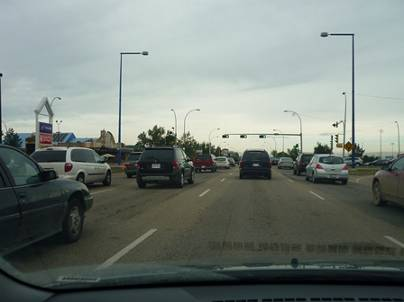
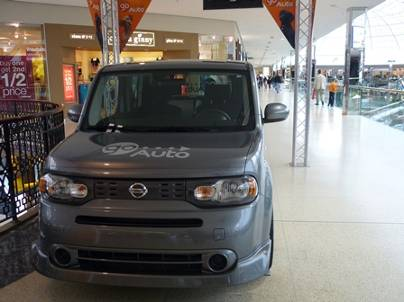
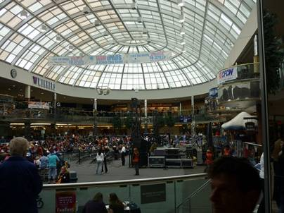
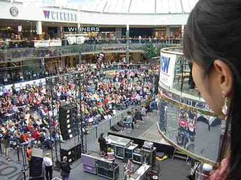
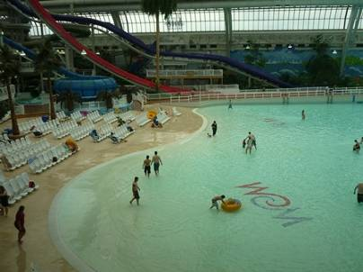
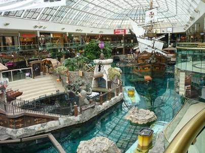
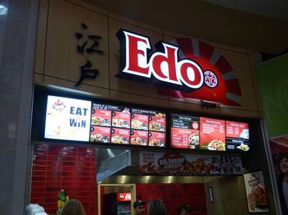
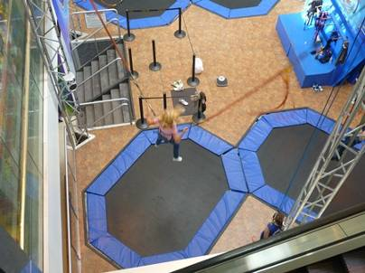

８日目(9/11)～厳寒地の楽園、West Edmonton Mall～

今日は旅の目玉の一つのWest Edmonton Mallに行く。ここは日本でいうイオンをでかくしたような感じのショッピングモールだ。その規模は北米最大級らしく、冬の寒さが厳しいエドモトン市民の理想を実現した施設ということらしい。900以上の専門店が入っており、他にも屋内アミューズメントプール、遊園地まである。

遊園地はかなりお子様向けのようだったので今回は素通りするだけ。入場料は取られない。奥様が買い物を楽しむ間、旦那は子供を連れてここに来るというのがベタなシナリオだろうか。

カナダのマックはM字の中央にメープルリーフがあしらわれている。



モール内のあちこちに車が展示されていた。いちばん右のランボルギーニはうん千万円はするという高級スポーツカーだが、これは売り物ではなく抽選に応募したお客さんの中から当選した人にプレゼントされるそうだ。


この日は本来スケートリンクのある場所でライブが行われていた。かなりの盛況ぶり。



屋内プールやアシカショーの舞台、ミニ水族館まであった。

今日の昼食はケンタッキー。



ここでも日本のお寿司はメジャーな食べ物のようだ。そして最近日本にも進出しているヨーゲンフルーツでデザートを食べた。断然こちらの方が安く、そして量も多い！なんで日本はあんなにケチなんだろう・・・

定時になったのでアシカショーを見に行くことにした。近くで見ると有料なのに、少し距離を置いてみるのは無料。

屋内プールのすぐ横にあったトランポリン。楽しそうではあるのだが、10分大衆の前でただ単にはね続けるのはかなり恥ずかしくないだろうか？

今日の夜ごはんはかなり贅沢に鉄板焼き！一人3000円くらいだったような気がする。AAAグレードのアルバータ牛サーロインを使ったステーキの味は格別。このお店、実は一年半前にも訪れたジャパニーズビレッジというお店だ。シェフはやたらと日本を強調しながら作ってくれたが、おなじみのナイフを振り回すパフォーマンスと言いDJのような臨場感あるトークと言い、もはや日本を超越しているように思えた。肉だけでなく、ここの自慢はゴマの効いたソース。ご飯にかけてもうまい！エドモントンに来たら必ず訪れたいお店だ。残念ながら、去年ワーホリで来ていた日本人女性はもういなかった。